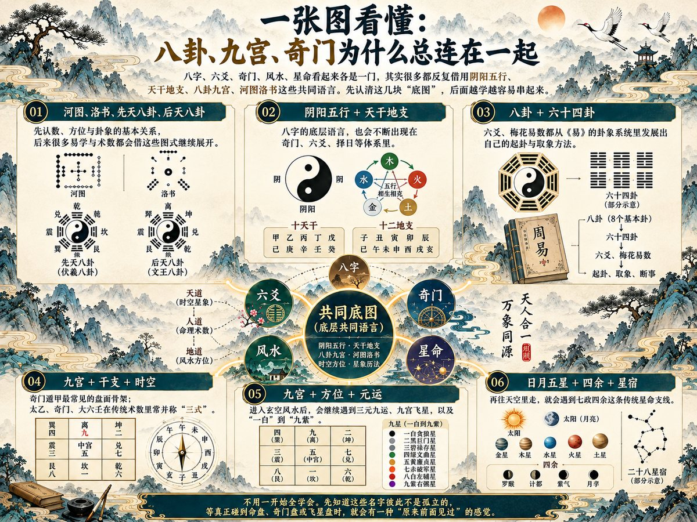

天地有阴阳，年月有干支，宅院有方位，星辰有宫位。古人相信，万事万物都有自己的"时、位、势、数"。为什么八个字能排成命局？为什么奇门一盘要纳九宫、八门、九星？风水究竟看山水还是看人居？紫微十二宫又在讲什么？从《周易》开始，一扇门一扇门往里走，原本玄之又玄的词，会慢慢连成一张完整的图。
先从哪一扇门推开？
不用把它当"上课"。把它当成一张古人留下来的秘密地图：有阴阳八卦，有命盘星宿，有宅院方位，也有人情、权谋、商道和家风。先从自己最想知道的地方进去，再一点点把前后知识串起来。
- 想看一集就看一集；哪一门最吸引你，就顺着多看几集，累了便停。
- 先视频、后读书。书不必从第一页硬啃，视频讲到哪里，就翻到哪里。
- 遇到真正打动你的观点，可以随手记下一句；以后再翻回来，往往会看到新的意思。
- 八字、紫微、奇门、风水、相术这些内容，按传统文化与术数兴趣来学；它们不是经过现代科学验证的预测工具。
入门先识三件事
- 公开平台优先。央视、B站课堂等地方已经有很多完整内容；课程里再推荐的私人微信、QQ群、弟子班、改运班，并不是入门必须走的路。
- 先看公开内容和试听，再决定要不要继续。真正有内容的老师，不怕你先比较、先查资料；遇到高额学费或连续升级收费，先别急着交钱。页面价格会变化，以付款时显示为准。
- 真正的门道经得起慢慢看、慢慢问。若有人用"能治病、保证发财、消灾改命、必须马上交钱"催促付款，就先放一放；健康问题找正规医生，投资问题也不按命理或风水做决定。
先看看 12 扇门
| 主题 | 会遇见的关键词 | 为什么值得看 |
|---|---|---|
| 01 周易与天地规律 | 阴阳、河图洛书、先后天八卦 | 从"变化"与八卦底图看古人的宇宙观 |
| 02 八字与紫微命理 | 天干地支、四柱、十二宫 | 看懂古人怎样画"人生地图" |
| 03 三式·奇门·六爻·梅花与择时 | 三式、九宫、起卦、择时 | 看古人怎样把时间、方位与卦象放进一张盘 |
| 04 风水与家宅 | 山水、朝向、三元九运、飞星 | 看古人如何理解人与居住环境 |
| 05 相术与识人 | 神、骨、气、色 | 从传统识人术进入观察与人情 |
| 06 菜根谭与人情世故 | 进退、分寸、待人 | 学会把日子过得更通透 |
| 07 帝王术·权谋·识人与进退 | 识人、用人、位置、赏罚、进退 | 看人怎样被重用、守住位置，又为什么会失势 |
| 08 财富商道与家业传承 | 胡雪岩、货殖、义利 | 从兴衰故事里看做事与守成 |
| 09 家风、家书与教子 | 家书、家训、立身 | 看一个家怎样把好习惯传下去 |
| 10 修身与"改命" | 立命、改过、积善 | 把"改命"落到自己能做的事情上 |
| 11 《黄帝内经》与传统生命观 | 四时、阴阳、养生文化 | 了解传统中国怎样理解身体与季节 |
| 12 山海经、天文星宿与古代历法 | 异兽、二十八宿、七政四余、节气 | 走进最有想象力的古代世界观 |
一张图看懂：八卦、九宫、奇门为什么总连在一起
八字、六爻、奇门、风水、星命看起来各是一门，其实很多都反复借用阴阳五行、天干地支、八卦九宫、河图洛书这些共同语言。先认清这几块"底图"，后面越学越容易串起来。
先认这几条暗线：
- 河图、洛书、先天八卦、后天八卦：先认数、方位与卦象的基本关系，后来很多易学与术数都会借这些图式继续展开。
- 阴阳五行 + 天干地支：八字的底层语言，也会不断出现在奇门、六爻、择日等体系里。
- 八卦 + 六十四卦：六爻、梅花易数都从《易》的卦象系统里发展出自己的起卦与取象方法。
- 九宫 + 干支 + 时空：奇门遁甲最常见的盘面骨架；太乙、奇门、大六壬在传统术数里常并称"三式"。
- 九宫 + 方位 + 元运：进入玄空风水后，会继续遇到三元九运、九宫飞星，以及"一白"到"九紫"。
- 日月五星 + 四余 + 星宿：再往天空里走，就会遇到七政四余这条传统星命支线。
不用一开始全学会。先知道这些名字彼此不是孤立的，等真正碰到命盘、奇门盘或飞星盘时，就会有一种"原来前面见过"的感觉。

图 1 六块「底图」一览：河图洛书与先后天八卦 · 阴阳五行与天干地支 · 八卦与六十四卦 · 九宫与干支时空 · 九宫与方位元运 · 日月五星与四余星宿
01 周易与天地规律
如果把中国传统文化比作一棵大树，《周易》像最古老的一条根。阴阳、八卦、乾坤、变与不变，很多后来听到的术数名词，都能在这里找到"祖先"。
这一门，会慢慢看懂什么
- 先认阴阳和八卦，不急着背六十四卦。
- 理解"乾、坤、变、时、位"这些最常出现的观念。
- 知道《周易》既有经文，也有后世解释传统；学习时先看文化和思想，再碰占筮。
- 认识河图、洛书这两张古老图式，看看"数、方位、五行"怎样被后世易学和术数不断解释。
- 分清先天八卦和后天八卦：同样八个卦，排列方式不同，后来在易学、奇门和风水里会反复碰到。
- 等学到奇门和风水时再回头看，会发现九宫、方位、八卦其实一直在重复使用同一套"底图"。
课程从这里开始
| 类别 | 课程｜平台 · 课时 · 价格 | 说明 |
|---|---|---|
| 系统主课 | 《周易概论》｜中国大学MOOC · 11 章 · 免费 | 中国政法大学刘震主讲，首批国家级一流本科课程。从周易基本概念、发展历史讲到象数与筮法，章节完整、可跟着整理笔记复习。 |
| 系统主课 | 《中华优秀传统文化》｜中国大学MOOC · 15 周 · 免费 | 复旦大学唐明燕主讲，国家级一流本科课程。从中华文化的源头讲到核心要义，把「周易—诸子—人文」这条脉络串起来，与上一门《周易概论》互为里外。 |
| 系统主课 | 《易经的智慧》｜A站 · 150 集 · 免费 | 曾仕强主讲，1–64 卦完整讲座（150 集）。第 001 集讲龙马负图（河图）、002 集讲神龟载书（洛书）、006 集讲八卦定乾坤，正对《周易概论》的河图洛书与八卦方位两章。它的前身是 2009 年百家讲坛《易经的奥秘》，A 站另有 18 集完整版（见下一行）。 |
| 进阶选修 | 《易经的奥秘》18 集完整版｜A站 · 18 集 · 免费 | 曾仕强在央视《百家讲坛》讲《易经的奥秘》的完整版，与上面的 150 集讲座同源，属更早的央视原版；比 央视网 15 集版 多出《三画为卦》《易经的思维》《回到原点》三集。想先看讲坛原版，从这里进。 |
| 进阶选修 | 《易经完全通》中级班＋高级班｜A站 · 75 集 · 免费 | 曾仕强另一套体系课的中高级部分（全课共 108 集），这 75 集按卦逐讲六十四卦的卦象、卦辞与爻辞。它与《易经的智慧》讲的是同一批卦，想深看一套即可，不必两套都刷。 |
收费课程，供参考：《中华文化 追根溯源》（能力天空 · 12 讲 · 1995 元，约 166 元/讲，购买前建议先试看）。
配套读书
先读 · 打底 目标：先把「象」与「辞」的底子搭稳
- 黄寿祺、张善文《周易译注》（任选正规出版社版本）——最常用的现代译注本，逐句讲清爻辞与彖象，适合当案头工具书。
- 《周易》原文配白话注释本——对照经文与译注，练自己读原文的手感。
再读 · 拓展 目标：从「经」读到「传」，看古人自己怎样解释《周易》
- 《易传·十翼》——正文说《周易》「既有经文，也有后世解释传统」，这十篇就是那套解释本身：《彖》《象》《系辞》《文言》把六十四卦讲成义理。
选书提示：优先选“原文 + 注释 + 白话译文”三栏清楚的版本，不买只讲“改运秘诀”的解说书。
学完这一门，可以做到：看到"乾、坤、阴、阳、卦"时，知道它们不是一句"算命口诀"，而是一套古人用来描述变化的符号语言。
02 八字与紫微命理
出生年、月、日、时，在传统命理里会被写成四柱八个字；紫微斗数则把星曜和十二宫排成一张"命盘"。这两套东西最像古人给人生画的两种地图。
这一门，会慢慢看懂什么
- 先学天干地支、五行、四柱，搞懂"八个字"到底是什么。
- 再认识十神、大运等八字术语，能听懂老师在说什么。
- 紫微先认十二宫和十四主星，不必一开始就追求"断得准"。
课程从这里开始
| 类别 | 课程｜平台 · 课时 · 价格 | 说明 |
|---|---|---|
| 系统主课 | 《四柱八字零基础到实战教程》｜B站 · 200 节 · 免费 | 青龙易学工作室。200 节体系课（约 14 小时），前段讲阴阳五行、天干地支、四柱十神，后段带实战案例，明确参考《渊海子平》《滴天髓》。想先建立全局认知，可先看 《速成版：两小时学会看八字》。 |
| 系统主课 | 《紫微斗数入门教学》分集系列｜B站 · 免费 | 国学妙妙屋。从星曜（含十四主星）到四化逐集讲，讲法慢、门槛低，最适合零基础按集跟学。 |
| 进阶选修 | 《梁湘润·子平概论》全集｜B站 · 免费 | 梁湘润台版原课录像，讲「子平母法」；音画较旧，建议跟完上面的《四柱八字零基础到实战教程》再看。 |
| 进阶选修 | 《倪海厦·天纪》紫微斗数｜B站 · 免费 | 倪海厦原课，约 739 分钟；属「随性散讲」，宜学完基础再听，不必当作入门主线。 |
收费课程，供参考：《八字零基础教程》（B站课堂 · 82 课 · 约 18 元）、《秘传绝学传统八字命理自学教程》（B站课堂 · 约 235 课 · 398 元）、《秘传绝学紫薇斗数自学教程》（B站课堂 · 约 299 课 · 398 元）。
配套读书
先读 · 打底 目标：先听懂这一门的术语在说什么
- 《子平真诠》白话/译注本（八字兴趣进阶）——把「取用神、论格局」讲成一套可以逐条核对的规则。
再读 · 拓展 目标：把「一张盘」读成「一整套体系」
- 《紫微斗数全书》只在看完入门视频后选读；紫微想学得更系统，可另配王亭之《中州派紫微斗数初级讲义》——中州派体系清楚、术语讲得慢，适合对着命盘逐步核。
存目 · 备查 目标：知道命理古籍还能往哪儿深入，需要时选正规出版社白话本
- 《三命通会》（明·万民英）——现存命理古籍里最系统的一部，比《子平真诠》更全，历来被当作命理集大成。
选书提示：这两类古书术语多，先视频后读书。买“白话、注释齐全”的版本即可，不必追高价秘本。
学完这一门，可以做到：别人一说"四柱、天干地支、十二宫、主星"，你能知道是在讲哪一套系统，而不是只听"吉凶结论"。
03 三式·奇门·六爻·梅花与择时
奇门遁甲像一张"时空棋盘"，六爻像把一件事拆成六层变化。再往旁边看，还有梅花易数、大六壬、太乙与择日。它们最吸引人的地方，不是"神准"，而是同一批阴阳、干支、八卦、九宫概念，竟能组合出完全不同的古代推演体系。
这一门，会慢慢看懂什么
- 奇门先认九宫、八门、九星、八神，知道一张盘由哪些部分组成。
- 六爻先学起卦、装卦、用神这些基本步骤。
- 把"择时、占测"当作传统术数的思维史来学，不把一次卦象当作现实命令。
- 先知道传统"三式"：太乙、奇门、大六壬。奇门最常见；大六壬和太乙先认名字、盘式和用途差别即可，不必一上来学复杂推演。
- 梅花易数的趣味在"触物起卦"：时间、数字、声音、眼前所见都可以成为取象线索，先把它当传统象数思维来理解。
- 择日把干支、节气、建除等放进"什么时候做事"的传统框架里。婚嫁、搬家、开业、出行等生活事项常会出现在黄历宜忌中；先学看懂术语和来历，不必让每条宜忌替自己做决定。本门不单设择日专课，先知道它在做什么就好。
课程从这里开始
| 类别 | 课程｜平台 · 课时 · 价格 | 说明 |
|---|---|---|
| 系统主课 | 《奇门遁甲新手教程》｜B站 · 免费 | 云野卦馆。全程带学张志春《神奇之门》，从头讲排盘、符号与取象。 |
| 系统主课 | 《新手学六爻系列·知识架构篇》｜B站 · 免费 | 易谷yigu。62 分钟先把六爻的知识骨架搭清楚，再顺着其分课系列循序渐进。 |
| 系统主课 | 《梅花入门教程》｜B站 · 免费 | 云野卦馆。180 分钟手把手覆盖体用与应期，正对「三式」之外最实用的一支，学完可以拿身边小事练手。 |
| 进阶选修 | 《六爻零基础》｜B站 · 免费 | 易小玄来啦。319 分钟完整课，按《增删卜易》体系讲；可与上面的《新手学六爻系列·知识架构篇》互相对照、互相印证。 |
收费课程，供参考：《术之源头：奇门遁甲入门》（B站课堂 · 10 课 · 268 元，购买前建议先试看）、《六爻实战班》（B站课堂 · 108 课 · 99 元）、《秘传绝学梅花易术自学课程》（B站课堂 · 约 70 课 · 298 元）。
奇门进阶路线（由浅入深）
免费档之后，如果确实想把奇门学到能独立断局，可以沿下面这条路线逐级往上。它是同一位老师（崔国文，清华大学退休教授）由浅入深的分级课，价格跨度很大，建议先走完上一节的主课，再决定上到哪一级。
| 层次 | 课程｜平台 · 规模 · 价格 | 说明 |
|---|---|---|
| ① 体系正课 | 《奇门遁甲基础入门》｜网易公开课 · 19 讲 · 98 元 | 崔国文主讲。从参数、阴阳五行、天干地支讲到八门、九星、八神与起局方法；含 19 份 PDF 讲义（其中有十干克应表），前 4 讲可免费试看。A 站另有同源的免费讲座全集《奇门遁甲入门教程》，可先免费过一遍基础。是免费档过渡到体系课的第一站。 |
| ② 案例进阶 | 《奇门中级案例应用与分析》｜易先生 APP（中观国学）· 22 节 · 1880 元 | 崔国文主讲（易先生 APP 内按课程名进入）。22 节全是分类实战：健康、婚姻、风水、寻人寻物、天气、出行、商贸、工作考试、诉讼、比赛等，配文字课件、长期可回看。暂无试看，A 站与 B 站也没有同名影像。这是从「会排盘」到「会断局」的一级台阶。 |
| ③ 高级研修 | 《奇门遁甲高级研修班》｜易先生 APP · 多期直播 · 面授 12800 元（4 天 · 北京） | 崔国文主讲。讲空亡真空假空、马星、十二长生、六仪击刑入墓、伏吟反吟、暗干与十干克应类象，续以用神取法与分类实战；每周三、周六晚直播，一期约 1.5–2 个月。A 站存有这套线下正课的免费影像《奇门遁甲》面授研修班 8 集。 |
| ④ 研究型 | 崔国文教授综合提高班｜中观国学 · 5 天面授 · 16800 元 | 研究型教学：学员带案例、教授点评、小组研究；报名门槛写得很明确——须已学完崔教授的奇门高级课与八字高级课。属「进阶之后再进阶」，不是给新手准备的体系课。A 站存有该班现场案例的免费影像《奇门遁甲》研修班实战案例。 |
| ⑤ 其他平台对照 | 《奇门遁甲高手训练营》｜网易公开课 · 65 课；《讲透奇门遁甲》｜网易云课堂 · 105+ 课时 | 高恒、孙玄同两位老师各自的体系课。想横向比较不同老师的讲法，可以看这两条；价格与更新进度以课程页为准。高恒那门第 1 讲可免费试看；孙玄同那门在 B 站有同名免费合集（116 集）。 |
上这条路线之前：它属于「同一体系逐级升级」的结构，价格从 98 元一路到万元面授，跨度很大。建议先走完免费档与 98 元的第一级，确认自己对奇门确实有兴趣、也认可这位老师的讲法，再考虑后几级；手册只如实标注层级与价格，不代表推荐购买。
配套读书
先读 · 打底 目标：把「起卦—装卦—断卦」的架子搭稳
- 《增删卜易》白话注释本——六爻最通用的入门与实战底本。
再读 · 拓展 目标：把「梅花」「奇门」这几支先补上一本可读的
- 《梅花易数》白话读本——触物起卦，先把传统象数思维用起来。
- 张志春《神奇之门》——从阴阳五行讲到排盘起局，讲法平实，常被当作现代奇门的自学读本。
存目 · 备查 目标：本门提到的另几部专书，暂无可稳定访问的免费简体全文，需要时选正规出版社白话本
- 《卜筮正宗》（清·王洪绪）——六爻两大必读之一，与《增删卜易》并列。
- 《六壬大全》《大六壬指南》（明·陈公献等）——手册讲了「三式」，大六壬的入门正本就在这里。
- 《协纪辨方书》（清·允禄等奉敕编）——择日与黄历原理的官方集大成，正对本门「择日」这条支线。
- 《烟波钓叟歌》（宋·赵普传）——奇门纲领歌诀，仅百余句，是奇门最省力的入门读本。
选书提示：古籍判断法属于传统术数体系，适合配视频看概念；医疗、法律、投资等重大决定仍看现实证据与专业意见。
学完这一门，可以做到：看见一张奇门盘或六爻卦时，不再觉得"全是天书"，能大致说出每一层符号在做什么。
04 风水与家宅
古人看宅院，不只是看一扇门朝哪边，还会把山、水、路、光、风、方位一起放进一张"环境图"里。风水最适合从"人怎么和居住环境相处"这个角度学。
这一门，会慢慢看懂什么
- 先认识形势、朝向、八卦、九宫等常用词。
- 看看传统风水怎样描述山水、道路、门窗与空间。
- 把真正能改善生活的部分——采光、通风、动线、整洁、安全——和传统吉凶说法分开。
- 认识玄空风水里的"三元九运"和"九宫飞星"，知道这套体系会把"时间"也叠加到住宅方位上。
- 看懂"一白、二黑、三碧……九紫"这些像暗号一样的飞星名称从哪里来；先学体系和来历，不把某一年的方位吉凶当成必然结果。
课程从这里开始
| 类别 | 课程｜平台 · 课时 · 价格 | 说明 |
|---|---|---|
| 系统主课 | 《阳宅风水全套教学视频》｜B站 · 免费 | 进击的打虎英雄。267 分钟成套，讲阳宅形势与布局，从基础的坐向、八卦讲到实际房型判断。 |
| 进阶选修 | 《传统阳宅风水学教程》全集｜B站 · 免费 | 元清先生。18.7 小时体系课；讲飞星随时间变换，把「元运」这一维补上，可与上一门配合着看。 |
| 进阶选修 | 《玄空飞星风水教学》｜B站 · 免费 | 晨阳卜易。40 节共 133 分钟，专讲玄空飞星，可与元清先生一门拼着看。 |
| 进阶选修 | 《建筑与风水》｜超星慕课 · 32 课时 · 免费（需登录） | 江西财经大学胡名芙主讲。按「风水与风水学—帝陵风水—阳宅外部地形—八宅—玄空—三元八卦水法」逐章讲，把这套传统宅法放进高校选修课的框架里，配教学大纲与题库；可与上面几门民间课对照着看。需注册超星账号后进入课程。 |
收费课程，供参考：《大玄空阳宅布局规划》（B站课堂 · 128 课 · 199 元，蔡宇阳主讲）、《秘传绝学玄空风水自学课程》（B站课堂 · 约 101 课 · 298 元）。
风水进阶路线（由浅入深）
风水往上走有两条并行的路：一条是学院派，把它当人居环境与建筑理论来研究；一条是民间师承，走术法实战。下面按由浅入深排开，供对照。
| 层次 | 课程｜平台 · 规模 · 价格 | 说明 |
|---|---|---|
| ① 学院派导论 | 《风水学概论》公开课｜网易公开课 · 7 集 · 免费 | 北京大学于希贤教授主讲。他 1984 年起就在北大讲风水，曾两次出席联合国「世界文化多样性大会」讲中国风水哲学；这门免费公开课正对「风水到底是什么」。 |
| ② 学院派体系 | 《风水与人居环境》｜网易公开课 · 17 集 · 99 元 | 于希贤主讲，前 3 集免费试看。结构＝外局 → 内局（大门、玄关客厅、卧室厨房、书房卫生间、财位神位、植物动物）→ 北京、莫斯科、华盛顿、广州、长沙、昆明六座城市风水。 |
| ③ 建筑本体 | 《中国古建筑文化与鉴赏》｜智慧树 · 28 学时 · 免费 | 清华大学楼庆西、王贵祥主讲，楼庆西师从梁思成。不懂古建筑，风水只能背口诀，这是绕不开的底子。 |
| ④ 民间师承·理气 | 《家居风水中级进阶班》｜易先生 APP · 32+ 课时 · 1880 元 | 王进武主讲，三僚杨公风水廖氏第 31 代传人（师承第 30 代廖书生）。以城市家居全场景为主：选楼层、财位、主卧、书房、商铺，教罗盘与峦头理气基础。 |
| ⑤ 民间师承·峦头 | 《杨公风水峦头断验班》｜中观国学 · 4 天沈阳面授＋游学 · 9800 元 | 王进武主讲。寻龙、察砂、观水、点穴、立向，加罗盘实操与初级理气；其核心主张是「峦头为体，理气为用」。属面授实战，不是线上可以自学完的课。 |
关于「师承」这两层：民间师承课越往上越贵，也常以「传人、秘法、面授」为卖点。手册把层级、价格与师承来源如实列出，供有兴趣的人对照；真要投入之前，先看清授课形式（录播还是面授）、能否试看、以及是否脱离平台私下收款。
配套读书
先读 · 打底 目标：先看懂这一门的基本术语
- 《阳宅三要》白话注释本（只作传统术数阅读）。
再读 · 拓展 目标：把「住得舒服」和「传统吉凶」两条线分开看
- 建筑/家居设计的采光、通风、收纳类通俗书——想看现实居住环境，从这里进，比背口诀实在。
存目 · 备查 目标：这一门涉及的原典，暂无可稳定访问的免费简体全文，需要时选正规出版社白话本
- 《葬书》（晋·郭璞）——形势派（峦头）的源头文献。
- 《撼龙经》《疑龙经》（唐·杨筠松）——形势派的源头，与「杨公风水」一条线。
- 《地理五诀》（清·赵九峰）——峦头「龙穴砂水向」的入门第一书，正对本门的杨公峦头课。
- 《沈氏玄空学》（清·沈竹礽）——玄空一派集大成之作。
- 《宅经（黄帝宅经）》——阳宅理论的早期经典，篇幅短，适合先看框架。
参照 · 现代研究 目标：把传统术数放进现代建筑与环境科学里看
- 王其亨《风水理论研究》（天津大学）——学院派代表作，正面回答「风水到底是什么」，与手册的「学院派路线」两级呼应；暂无免费全文，选学术出版社版本。
选书提示：所谓“催财、化煞、改命”属于传统信念，不把它当成已被科学证明的效果。
学完这一门，可以做到：以后听人说"坐向、九宫、三元九运"，你知道他在用哪套传统语言，也能把环境实用问题和吉凶说法区分开。
05 相术与识人
古人喜欢从"神、骨、气、色、声音、姿态"观察一个人。《冰鉴》一类读物之所以耐看，是因为它把"看人"写得像一套江湖观察术。
这一门，会慢慢看懂什么
- 认识传统相术常说的神、骨、容貌、情态、声音、气色。
- 把有用的部分放在"观察言行、长期相处、听其言观其行"。
- 知道外貌不能可靠判断一个人的健康、性格、前途，更不能因此贴标签。
课程从这里开始
| 类别 | 课程｜平台 · 课时 · 价格 | 说明 |
|---|---|---|
| 系统主课 | 《秘传绝学麻衣面相自学课程》｜B站课堂 · 约 326 课 · 付费 | 依《麻衣神相》一路讲下来，面相基础扎实，可对着身边人练。价格与课时以课程页为准。 |
配套读书
先读 · 打底 目标：先看传统「识人」话语长什么样
- 《冰鉴》白话读本（传统上常署曾国藩名）。
再读 · 拓展 目标：把「看脸」换成「看言语与行为」
- 《世说新语》白话选读——从古人的言谈应对里看性格与风神，比相术更有意思。
存目 · 备查 目标：这一门的识人、相术专书，暂无可稳定访问的免费简体全文，需要时选正规出版社白话本
- 《人物志》（三国魏·刘劭）——系统识人学的开山之作，比相术更有思想分量，属子部名家。
- 《神相全编》（宋·陈抟／明辑）——相术集大成之作，可作《麻衣神相》的补充。
- 《柳庄相法》（明·袁珙）——明代相术名著，讲法与《麻衣》不同，可对照着看。
选书提示：《冰鉴》的作者归属历来有争议；读它重在了解传统识人话语，不必把相貌和命运画等号。
学完这一门，可以做到：把"识人"从看脸变成看长期行为、说话方式、做事是否靠谱；相术当文化趣味，现实判断多看事实。
06 菜根谭与人情世故
有些国学不用背年代，也不用画命盘。《菜根谭》讲的是人遇到顺境、逆境、得失、进退时，怎样把心放稳，把话说得有分寸。
这一门，会慢慢看懂什么
- 从短句和小故事学"进退、取舍、宽严、得失"。
- 理解儒、释、道观念怎样混在日常处世里。
- 把"世故"学成分寸，而不是学成算计。
课程从这里开始
| 类别 | 课程｜平台 · 课时 · 价格 | 说明 |
|---|---|---|
| 系统主课 | 《菜根谭》与职场智慧｜优课在线 · 14 周 · 免费 | 黑龙江大学霍明琨教授主讲，2018 年国家精品在线开放课程。逐讲菜鸟功课、老鸟心经、逆境与压力、世故与人情等话题，章节清晰、可反复回听。 |
配套读书
先读 · 打底 目标：先学会随手翻、随时停
- 《菜根谭》白话注释本。
再读 · 拓展 目标：把「处世三大奇书」配齐
- 《围炉夜话》白话本。
存目 · 备查 目标：同类的清言小品与处世名著，暂无可稳定访问的免费简体全文，需要时选正规出版社白话本
- 《小窗幽记》（明·陈继儒）——「处世三大奇书」之一，与《菜根谭》《围炉夜话》并列，缺它最扎眼。
- 《幽梦影》（清·张潮）——清言小品里趣味性最强的一部，最适合随手翻。
- 《呻吟语》（明·吕坤）——明代处世名著，比《菜根谭》更沉、更实。
选书提示：这几本都适合随手翻，不需要按章节硬读。看到有感触的一句，停下来想一想就够。
学完这一门，可以做到：遇到人情烦恼时，多一个"先看分寸、再看得失"的角度，少被一句话气得绕不出来。
07 帝王术·权谋·识人与进退
真正好看的"权谋"，不一定在战场，更多时候发生在人和位置之间：谁会被重用，谁能把话说到点上，为什么有人能力很强却失势，又为什么有人能在复杂关系里稳住自己的位置。把历史里的权力故事看懂，重点不是争斗，而是识人、用人、名望、利益与进退。
这一门，会慢慢看懂什么
- 看懂一个人的"位置"从哪里来：能力、信用、资源、关系、时势，以及别人是否愿意信任他。
- 从历史人物的升迁、被重用、失势、结盟、赏罚中，看清人情、利益与权力是怎样交织的。
- 学"进退"：什么时候该争取，什么时候该让一步，怎样说话既不软弱，也不轻易把关系做死。
- 《孙子兵法》只保留"势、虚实、知己知彼、先胜后战"等能用来判断局面的思路；军事战术不是这一门的主线。
课程从这里开始
| 类别 | 课程｜平台 · 课时 · 价格 | 说明 |
|---|---|---|
| 系统主课 | 《资治通鉴导读》｜学堂在线 · 25 周 · 免费 | 清华大学张国刚主讲，权威系统，从识人用人讲到升降进退，章节完整、可跟着做长期笔记。 |
| 系统主课 | 《领导科学与领导力》｜中国大学MOOC · 8 章 · 免费 | 中南大学开设。讲领导力的内涵与来源、选人用人的方法与艺术、领导责任与决策，把「权力怎么运转」拆成可学的框架。 |
| 进阶选修 | 《孙子兵法》｜中国大学MOOC · 免费 | 湖南大学尹世尤主讲，首批国家级一流本科课程。把十三篇收成「兵圣孙武、价值论、战争观、将帅观、谋略思想」几组，讲军事战理，也讲企业智慧与人生哲学；正合这一门「只取势、虚实、知己知彼」的用法，且完全免费。 |
配套读书
先读 · 打底 目标：先从故事里看「人在位置上怎样做选择」
- 《资治通鉴》故事选读/白话选本。
再读 · 拓展 目标：把谋略、说服、纵横各接上一本源头
- 《韩非子》选读——法家的驭下与赏罚逻辑。
- 《孙子兵法》保留作判断局势的旁支。
- 《智囊》（明·冯梦龙）——古代谋略故事总集，门槛最低、最贴这一门：一个故事就是一个案例。
- 《战国策》（西汉·刘向辑）——纵横术与说服艺术的原始现场，权谋语言的最好范本。
- 《鬼谷子》（旧题战国·鬼谷子）——纵横术的理论源头，篇幅短但密度极高。
- 《素书》（旧题黄石公）——仅百余句，把「识人—处世—进退」压成格言，最容易读完。
- 《商君书》（战国·商鞅及其后学）——法家制度与驭下之术的原始文本，宜与《韩非子》对照读。
存目 · 备查 目标：同门的几部政论专书，暂无可稳定访问的免费简体全文，需要时选正规出版社白话本
- 《贞观政要》（唐·吴兢）——君臣论治实录，讲用人与纳谏，与《资治通鉴》互为表里。
- 《反经（长短经）》（唐·赵蕤）——唐代权谋集大成，历来与《资治通鉴》并称。
选书提示：先读故事，再读原文；《资治通鉴》不必从头啃，可挑识人用人、升降进退、得失兴衰相关的篇章，看人在不同位置上怎样做选择。
学完这一门，可以做到：遇到复杂事情时，先问"目标是什么、条件够不够、对方怎么想、最坏代价是什么"，而不是一上来就硬碰硬。
08 财富商道与家业传承
"会赚钱"和"守得住"是两回事。胡雪岩、范蠡、商帮这些故事真正耐看的地方，是一个人怎么抓机会、用人、守信用，又会怎样因为判断失误走下坡路。
这一门，会慢慢看懂什么
- 听胡雪岩从起家到盛衰，观察机会、人脉、信用与风险。
- 从《史记·货殖列传》认识古人如何记录商人、产业与财富。
- 把"求财"从神秘招数拉回做事、信用、现金流和风险意识。
课程从这里开始
| 类别 | 课程｜平台 · 课时 · 价格 | 说明 |
|---|---|---|
| 系统主课 | 《中华商业文化》｜中国大学MOOC · 9 专题 · 免费 | 从说文解「商」讲到古今华商、商路、商帮与商道，先把宏观框架搭起来。 |
| 带课件课 | 《孙子兵法与企业经营》｜中国大学MOOC · 13 篇 · 免费 | 按《孙子兵法》十三篇逐篇讲，引申到企业策略、组织与竞争优势，每章配作业与测验，适合边学边做笔记。 |
| 进阶选修 | 《徽商与创新》｜学银在线 · 13 周 · 免费 | 安徽师范大学徽商发展研究院组织，马长伟等主讲。按徽商与商帮兴起、徽商各业、徽商账簿解读、徽商精神与经营创新逐章讲，横向与晋商比较，给「商帮」这一块补上可对照的实证材料。 |
| 进阶选修 | 《胡雪岩的启示》｜A站 · 免费 | 曾仕强主讲。从胡雪岩的起家、用人、守信用讲到盛衰转折，正对这一门「听胡雪岩从起家到盛衰」的那条线。 |
配套读书
先读 · 打底 目标：先看古人怎样记录商人、产业与财富
- 《史记·货殖列传》白话选读。
再读 · 拓展 目标：把「财富从哪来、怎么流通、义利怎么摆」讲清楚
- 《盐铁论》（西汉·桓宽）——义利之辨、农商之争的原始文献，正对本门「义利」这条线。
- 《管子》（先秦·管子学派）——轻重之术与古代经济思想最集中的一部，讲「财富从哪来、怎么流通」。
- 胡雪岩人物传记（选正规出版社、史料型版本）——看一个人怎样起家、又怎样衰落。
选书提示：《货殖列传》见于司马迁《史记》，里面保存了不少先秦秦汉时期关于经商、产业和财富观的材料。想再往古代经济思想里走，《管子》与《盐铁论》是最直接的两部原典。
学完这一门，可以做到：听"发财秘诀"时，先看它讲的是不是可验证的做事方法；真正能带走的，是守信、现金流、风险和识人用人。
09 家风、家书与教子
家风不是挂在墙上的四个字，而是一个家里天天重复的小事：怎么说话、怎么花钱、怎么读书、怎么对长辈、怎么面对挫折。古人的家书最适合看这些细节。
这一门，会慢慢看懂什么
- 从孔子、孟母、诸葛亮等故事看不同家庭教育方式。
- 读《曾国藩家书》里关于读书、交友、勤俭、兄弟相处的片段。
- 不照抄古代规矩，挑那些今天依然讲得通的习惯。
课程从这里开始
| 类别 | 课程｜平台 · 课时 · 价格 | 说明 |
|---|---|---|
| 系统主课 | 《中华传统家教家风》｜中国大学MOOC · 17 周 · 免费 | 湖南大学李兵教授主讲，首批国家级一流本科课程。按《颜氏家训》《朱子家训》《曾文正公家书》等逐讲家庭教育，体系完整、可反复回听。 |
配套读书
先读 · 打底 目标：从一封封家书里看「一个家怎样把好习惯传下去」
- 《曾国藩家书》白话选本。
再读 · 拓展 目标：把家训、家规、家范几种体裁都看一遍
存目 · 备查 目标：家训类里暂无可稳定访问的免费简体全文的几种，需要时选正规出版社白话本
- 《诫子书》（三国蜀·诸葛亮）——八十六字，最著名的家训；正文提到诸葛亮，这里正好落地。
- 《袁氏世范》（宋·袁采）——被称「家训之冠」，写的全是过日子的具体事，不是空道理。
- 《温公家范》（宋·司马光）——系统家范的早期范本，可与《颜氏家训》对照读。
- 《朱子家训》——篇短句整，常用作蒙学与家风读本，选带注释的版本即可。
选书提示：不需要接受古代所有观念；把它当“家庭生活史 + 处世经验”来读，挑合适的留下。
学完这一门，可以做到：把"家运"理解成一家人长期积累出来的习惯、关系和选择，而不是靠一次仪式突然改变。
10 修身与"改命"
这条线最接近"我命由我"的感觉，但不需要神秘法术。《了凡四训》真正耐看的地方，是把"改命"落到反省、改过、行善、谦逊这些每天都能做的事情上。
这一门，会慢慢看懂什么
- 了解《了凡四训》的"立命、改过、积善、谦德"四条主线。
- 把"命运"从外面的人替你改，变成自己一点点改习惯。
- 学会分辨：让你长期做得更好的是修身；让你一次性付钱"消灾"的是另一回事。
课程从这里开始
| 类别 | 课程｜平台 · 课时 · 价格 | 说明 |
|---|---|---|
| 系统主课 | 《了凡四训》的生命智慧｜学银在线 · 33 节 · 免费 | 浙江传媒学院何仁富教授主讲，分 6 个板块 33 节，按立命、改过、积善、谦德四条主线逐节讲，章节清晰、便于复习。 |
| 进阶选修 | 《儒家修身之道》｜学堂在线 · 清华大学 · 93 学时 · 免费 | 清华大学刘燕妮主讲，按格物、致知、诚意、正心、修身的次第逐讲展开。 |
| 进阶选修 | 《中华传统文化与人生修养》｜智慧树 · 四川大学 · 26 周 · 免费 | 周毅主讲，从传统文化整体讲人生修养与境界，按周推进、配单元考核。 |
| 进阶选修 | 《阳明心学与当代社会生活》｜中国大学MOOC · 6 章 · 免费 | 宁波财经学院邓凯主讲，从“致良知”“知行合一”讲到当代生活，每章配单元测验与作业。 |
配套读书
先读 · 打底 目标：把「修身」落到每天能做的事情上
- 《了凡四训》白话注释本。
- 《论语》——读它，为了看孔子怎样把「修身」讲成日常问答，而不是空道理。
- 《大学》——读它，为了记住「格物、致知、诚意、正心、修身、齐家」这条次第。
- 《中庸》——读它，为了理解「诚」与「中和」，知道自己为什么容易走极端。
再读 · 拓展 目标：把「修身」读到有骨气、有原话
- 《孟子》——读它，为了看「义利之辨」与「浩然之气」怎样把修身讲出骨气。
- 《传习录》——课里讲了阳明心学，这里补原话：读它，为了把「知行合一」「致良知」落回能读懂的问答。
- 《太上感应篇》等善书可作文化史延伸，不必当成现实因果公式。
选书提示：这条线最适合“慢慢做”：每天改一点脾气、作息、待人方式，比追求一次“开运”更有价值。
学完这一门，可以做到：以后再听到"改命"，先想到能不能改变自己的行为、关系和长期习惯，而不是先问要买什么法器或课程。
11 《黄帝内经》与传统生命观
《黄帝内经》最迷人的地方，是它把人放在四季、昼夜、饮食、情志这些大环境里理解。把它当作传统医学与生命观来读，会比把每句话都当"治病秘方"更耐看。
这一门，会慢慢看懂什么
- 认识阴阳、四时、五脏等传统医学概念在经典里怎样出现。
- 了解古人为什么强调顺时而养、起居有常。
- 清楚地区分"传统文化知识"和现代医学诊疗。
课程从这里开始
| 类别 | 课程｜平台 · 课时 · 价格 | 说明 |
|---|---|---|
| 系统主课 | 《解密黄帝内经》｜智慧树 · 9 章 · 免费 | 上海中医药大学、北京中医药大学、湖南中医药大学联合授课，王庆其教授主讲，涵盖阴阳五行、藏象经络、诊法与养生。 |
| 进阶选修 | 《黄帝内经》明师百讲｜A站 · 分章多讲 · 免费 | 陕西中医药大学张景明教授主讲，按《黄帝内经》原文分章逐讲（如第 12 章第 1–10 讲），讲法通俗；可与《解密黄帝内经》的章节对照着看。 |
配套读书
先读 · 打底 目标：先看懂传统医学怎样把人和四时绑在一起
再读 · 拓展 目标：把「养生文化」与「医疗诊疗」分开看
- 正规的中医药科普读物——先建立现代医学的底子，再回头看古人怎样讲身体。
存目 · 备查 目标：中医经典里另几种，暂无可稳定访问的免费简体全文，需要时选正规出版社白话本
- 《难经》（汉·旧题扁鹊）——中医四大经典之一，篇幅短，是《内经》与临床之间的桥梁。
- 《神农本草经》（汉·佚名）——中医四大经典之一，本草学的源头。
- 《遵生八笺》（明·高濂）——明代养生百科，偏文化生活而非临证方书，更适合当读物看。
选书提示：不根据视频自行诊断、停药、换药或购买高价保健品；身体不舒服仍以正规医疗为准。
学完这一门，可以做到：听懂传统养生话语从哪里来，同时知道哪些是文化观念，哪些健康问题需要医生和现代检查来回答。
12 山海经、天文星宿与古代历法
最后这一门最像"奖励关卡"：异兽、神山、日月、二十八宿、节气、历法，全都挤在古人的天空和地图里。神秘感最强，也最适合当成文化冒险。
这一门，会慢慢看懂什么
- 从《山海经》看上古地理想象、神话和异兽。
- 认识二十八宿、节气、纪年纪月这些古代时间与天空知识。
- 分清"古代天文学/历法史"和后来的星命占测，不把神话当历史事实。
- 把二十八宿串成一张天空地图：东方苍龙、南方朱雀、西方白虎、北方玄武四象之下，各有七宿；很多古代故事、历法和星占都会借这些名字说话。
- 再认识七政四余这条传统星命支线："七政"是日、月与金木水火土五星；"四余"传统上常指紫气、月孛、罗睺、计都。先知道它和紫微斗数不是同一套体系即可。
课程从这里开始
| 类别 | 课程｜平台 · 课时 · 价格 | 说明 |
|---|---|---|
| 系统主课 | 《宇宙史话》｜中国大学MOOC · 14 周 · 免费 | 北京工业大学开设。讲中国古人如何立杆测影、观日月五星以定历法，形成天地人关联的天学系统；也讲二十八宿、三垣的来龙去脉。 |
| 系统主课 | 《山海经》｜中国大学MOOC · 12 周 · 免费 | 大连海事大学孙建平主讲。以图卷为线索，分「山经」「海经」逐讲，正对《山海经》的地理、神话与异兽这一支线。 |
| 进阶选修 | 《天文学解密—观星文化》｜优课在线 · 15 周 · 免费 | 湖北大学毛竹等主讲。第 4 章「中国古代星空」专讲星空的划分、三垣，以及东方青龙、北方玄武、西方白虎、南方朱雀四象与中国占星术，正对「星宿」这条支线；学完前面两门主课再深入看。 |
配套读书
先读 · 打底 目标：先把「神话」「天文史」「术数」三类内容分开
- 《山海经》全译/白话注释本。
再读 · 拓展 目标：神话、地理、天象这几条线，各接上一部原典
- 《淮南子》（西汉·刘安及门客）——天文训、地形训、览冥训：女娲补天、后羿射日、嫦娥奔月都出在这里，是古代世界观的总汇。
- 《楚辞·天问》（战国·屈原）——一口气追问天象与神话一百七十余问，正是「星宿」这条线。
- 《吕氏春秋》（战国·吕不韦门客）——「十二纪·月令」把天时物候与政事绑在一起，正对古代历法。
- 《博物志》（晋·张华）——志怪博物一脉，与《山海经》《搜神记》连成一条线。
- 《穆天子传》（战国·佚名）——上古地理与远行的想象，补齐这一门「地理」的那一角。
- 《梦溪笔谈》（宋·沈括）——古人对天文历法与自然现象的观察记录，读来「不玄」。
- 《搜神记》白话本；张闻玉等古代天文历法通俗读物——先把真实的观星与历法知识建立起来。
存目 · 备查 目标：这一门的天文历算专书，暂无可稳定访问的免费简体全文，需要时选正规出版社白话本
- 《周髀算经》（汉·佚名）——盖天说与古代历算的核心文献，讲「天圆地方」到底怎么来的。
- 《开元占经》（唐·瞿昙悉达编）——古代星占集大成，星宿与七政四余这条线的总汇。
选书提示：神话、天文史、术数是三类不同内容；把它们分开看，反而能看得更明白、更有趣。
学完这一门，可以做到：既能享受神话和星宿的神秘感，也知道古人真实的观星、历法知识和后世占测说法不是一回事。
十二门怎么走：推荐入门顺序
不用严格照表走。这张表只负责解决"不知道从哪里开始"的时候。顺序只是推荐，哪一门最勾起好奇，就先从哪一门进去；遇到听不懂的地方，再回来补前面的基础。（表里的「阶段」是 24 个学习步子，与前面 12 门的门号各成一套编号，不必一一对应。）
| 阶段 | 主题 | 推荐入口 |
|---|---|---|
| 01 | 周易开门 | 《周易概论》：先跟前几章的基础理论，边听边记术语 |
| 02 | 八卦底图 | 《易经的智慧》：河图、洛书与八卦定位，先分清先天与后天 |
| 03 | 八字基础① | 阴阳五行、天干地支 《四柱八字零基础到实战教程》 |
| 04 | 八字基础② | 四柱、十神、大运概念 同上 |
| 05 | 紫微初见 | 《紫微斗数入门教学》：十二宫、星曜、四化 |
| 06 | 奇门入门 | 五行、天干地支、八神九星八门 《奇门遁甲新手教程》 |
| 07 | 三式初见 | 先认太乙、奇门、大六壬「三式」；大六壬可跟 B站 UP 主「云野卦馆」的新手教程入门，梅花易数另有专门课程可跟 |
| 08 | 六爻·梅花·择日 | 六爻先看起卦装卦；再知道梅花易数和择日各在做什么 《新手学六爻·知识架构篇》 |
| 09 | 风水基础① | 阳宅前几课：空间、阴阳、河图洛书 《阳宅风水全套教学视频》 |
| 10 | 玄空飞星 | 三元九运、九宫飞星、一白到九紫等基本名词 元清先生《传统阳宅风水学教程》 |
| 11 | 识人故事 | 《秘传绝学麻衣面相自学课程》：面相基础一路讲下来，可对着身边人练 |
| 12 | 处世小课 | 《菜根谭》与职场智慧：逐讲菜鸟功课、逆境与压力、世故与人情 |
| 13 | 权谋与位置① | 《资治通鉴导读》：识人用人、升降进退，可长期做笔记 |
| 14 | 权谋与位置② | 《孙子兵法》：再挑"势、虚实、知己知彼"相关章节细看，军事战术略过 |
| 15 | 商道框架① | 《中华商业文化》：中国商业史与商道思想，先把宏观框架搭起来 |
| 16 | 商道框架② | 《孙子兵法与企业经营》：十三篇逐篇讲，引申到企业策略与竞争优势 |
| 17 | 家风故事 | 《中华传统家教家风》：孟母、诸葛亮、《颜氏家训》等 |
| 18 | 家书听读 | 配合《曾国藩家书》白话选本读几封，比听视频更扎实 |
| 19 | 了凡四训① | 《了凡四训》的生命智慧：立命、改过 |
| 20 | 了凡四训② | 《了凡四训》的生命智慧：积善、谦德 |
| 21 | 黄帝内经 | 《解密黄帝内经》：经络、养生、诊断 |
| 22 | 山海经① | 《山海经》白话全译本：奇国异人、神兽；可配合《山海经》中国大学MOOC（大连海事大学 孙建平，分山经/海经逐讲）系统学习 |
| 23 | 山海经② | 《山海经》白话全译本：上古世界观与神话想象；系统课程见上一项 |
| 24 | 星宿与七政四余 | 《宇宙史话》：二十八宿、三垣、立杆测影与古代历法；想专看星宿，再接《天文学解密—观星文化》 |
真正入门，反而更能分清门道
喜欢神秘文化完全没问题。真正学得越多，反而越能看出：经典、神话、术数、历史、医学、天文，各有自己的来路。把它们分清楚以后，趣味不会少，反而更耐看。
你可以大胆地听故事、看命盘、学八卦、研究奇门；同时也保留一个自己的判断：凡是有人急着让你交大钱、说"只有我能帮你改命"、让你提供大量隐私，或者把健康和发财说成保证结果，就先不理。真正值得长期学的东西，经得起慢慢看、慢慢问、慢慢验证。
最好的一套"开运法"：多见识一点，多想明白一点，把自己的日子过稳一点。
跨门参照：想分清门道时可以读的几本
前面十二门里，经典、神话、术数、历史、医学、天文常常混在一起讲。这一节单独留几本「参照系」，帮你在读的时候把这几类分开——哪些是古人原典，哪些是后来的术数传统，哪些已经有现代研究。
- 《论衡》（东汉·王充）——古人自己「疾虚妄」的名著；想看清「反迷信」在中国自有传统，从这一本入手最直接。
- 李零《中国方术正考》《中国方术续考》——术数研究的学术标杆，把方术的来源与流变考清楚。（暂无免费全文，选学术出版社版本）
- 江晓原《星占学与传统文化》——把「星占」与「天文」的历史关系讲透，正对第 12 门。（暂无免费全文，选学术出版社版本）
- 顾颉刚《秦汉的方士与儒生》——方术与政治如何互相利用的经典研究。（暂无免费全文，选学术出版社版本）
- 王其亨《风水理论研究》——学院派风水研究的代表作，与第 04 门的「学院派路线」呼应。（暂无免费全文，选学术出版社版本）
怎么读这几本：不必通读。读到某扇门里某个说法拿不准时，回来翻相关的部分对照一下，往往比硬啃原典更能分清门道。
链接与版本说明
- 课程卡片里的课程名可以直接点击打开；2026-09-25 全部 46 条课程已逐条核实，链接指向各平台的课程页。
- 课程表下方另有一行灰色小字，列出该门被替换下来的付费课，标「收费课程，供参考」，同样可以直接点开；它们不占课程位，只留给已经试看过、确实想买正版的人作参考。
- 课程价格、优惠和有效期会变化。本手册按 2026-09-25 可见页面核验；购买时以平台结算页为准。
- 部分传统术数内容在平台上也会标注"未经科学验证，请注意甄别"。本手册将其定位为传统文化与兴趣学习，不把预测效力写成事实。
- 书籍优先给出经典书名和阅读方向，避免锁死某个可能停印或版本混乱的商品链接。购买时选正规出版社的白话/译注本即可。
- 原典免费读：本手册「配套读书」里的书名可直接点开，进入简体全文页——免费、免注册、页面无弹窗广告。中华五千年的每部书都配白话译文，古诗文网配注释与译文，国学网为老牌国学站点，太上感应篇专页为原文对照白话；想看古籍原书影印本，可用书格。
- 「配套读书」按阅读目标分成四档：先读 · 打底（把这一门的根扎稳）／再读 · 拓展（把这一门看宽）／存目 · 备查（暂无可稳定访问的免费简体全文，选正规出版社本）／参照 · 现代研究（把传统说法和现代研究分开看）。每一本都写明「读它为了什么」，可按自己的目的挑着读。
- 少数专书目前没有稳定、免费且带注释的简体全文站点，本手册暂不提供链接，建议选正规出版社的白话/译注本。这类书包括：命理《紫微斗数全书》《三命通会》《子平真诠》《滴天髓》《渊海子平》；术数《增删卜易》《卜筮正宗》《六壬大全》《大六壬指南》《协纪辨方书》《烟波钓叟歌》《开元占经》《周髀算经》；风水《葬书》《沈氏玄空学》《地理五诀》《撼龙经》《疑龙经》《宅经》《阳宅三要》；识人相术《麻衣神相》《人物志》《神相全编》《柳庄相法》；家训《朱子家训》《诫子书》《袁氏世范》《温公家范》；中医《难经》《神农本草经》《遵生八笺》；处世《小窗幽记》《幽梦影》《呻吟语》；权谋《贞观政要》《反经》。
- 个别平台（如超星慕课）的课程页需注册登录后才可进入内容，链接指向课程主页；本手册只写入已核实到对应课程页的网址。
- 部分课程的落地页经国家智慧教育平台（higher.smartedu.cn）等聚合页跳转，页面内标注的「开课平台」与本手册所写一致（如学堂在线、优课在线、中国大学MOOC），属平台之间的正常聚合，并非链接有误。